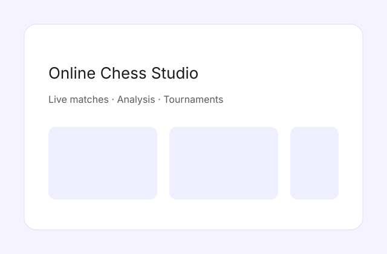

This project explores real-time multiplayer infrastructure with a focus on latency and reliability. The client side prioritizes readable board states, quick move confirmation, and game review.
I built the matchmaking service, state sync, and a minimal analysis board to revisit key positions.
View on GitHub